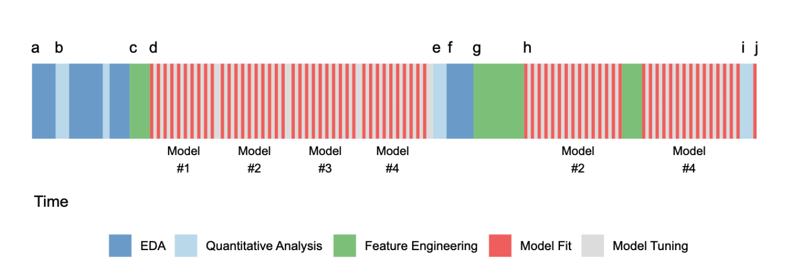
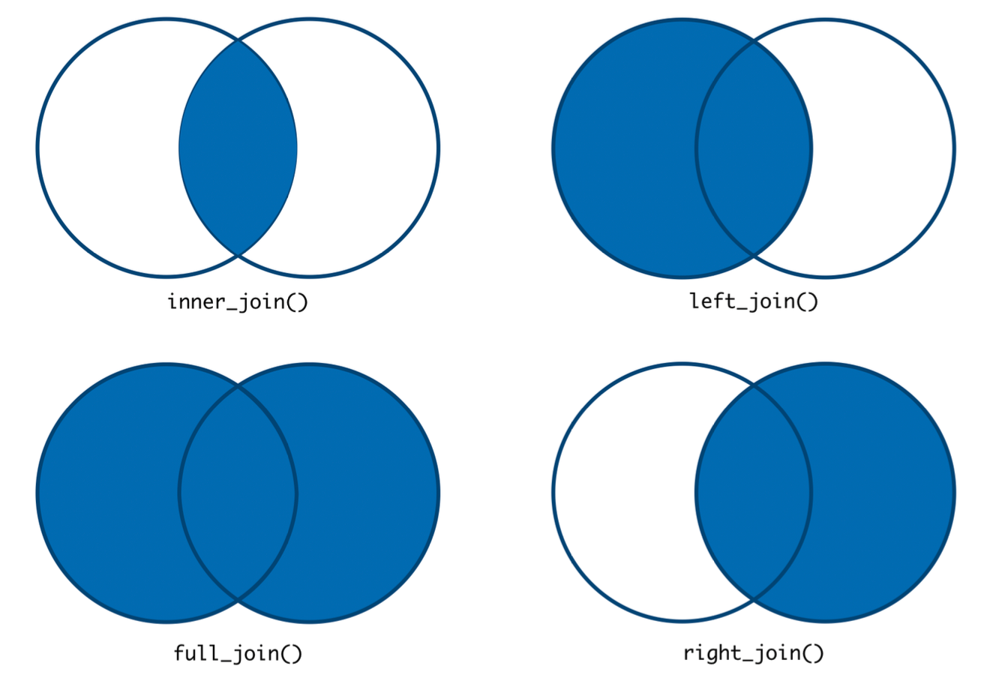
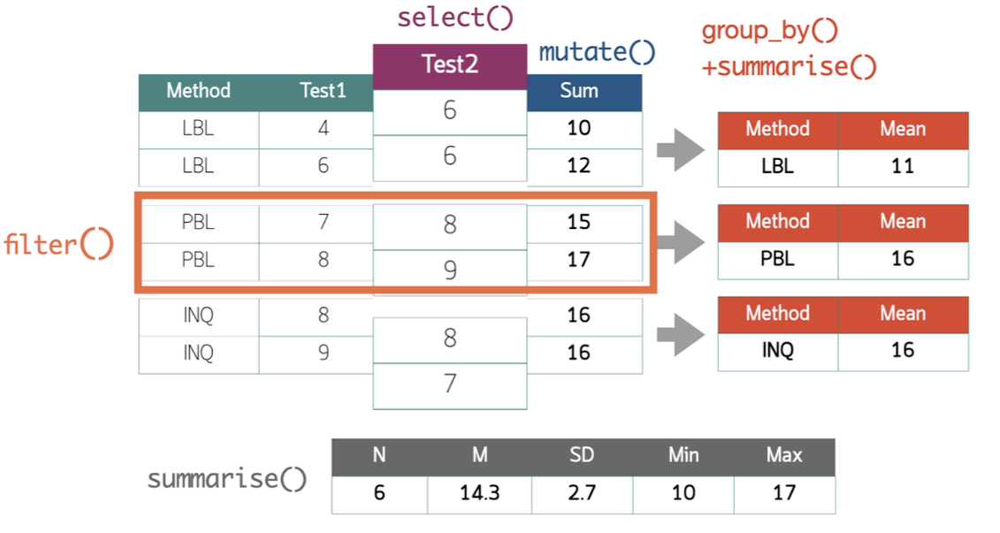
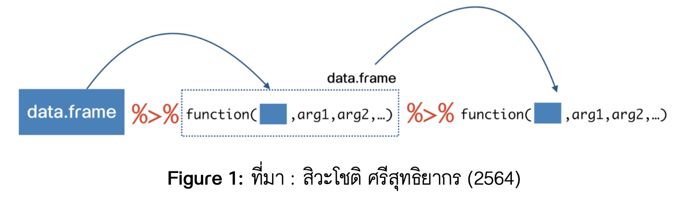

install.packages("tidyr")
install.packages("dplyr")
library(tidyr)
library(dplyr)5. Data Preprocessing
Practical Insight: Doing Data Science in Education with R
1 Data Preprocessing
เป็นกระบวนการที่มีวัตถุประสงค์หลักคือเพื่อจัดกระทำหรือแปลงข้อมูลดิบที่เก็บรวบรวมมาจากแหล่งข้อมูลต่าง ๆ ให้อยู่ในรูปแบบที่พร้อมและมีคุณภาพเพียงพอสำหรับการนำไปวิเคราะห์
- Exploring Data
- Cleaning Data
- Manipulating Data
- Data Reduction
2 Data Preprocessing

2.1 Tidyr & dplyr package


3 Exploring Data
ใน R มีเครื่องมือพื้นฐานสำหรับสำรวจภาพรวมของข้อมูลหลายตัว
head()และtail()- ใช้เรียกดูตารางข้อมูลส่วนหัว และส่วนท้ายglimpse()หรือstr()ใช้สำรวจโครงสร้างโดยรวมของชุดข้อมูลsummary()ใช้สรุปค่าสถิติเบื้องต้นของชุดข้อมูลView()ใช้เรียกดูชุดข้อมูลในหน้าต่างเฉพาะ
3.1 กิจกรรม : Messy Data (Revisited)
จากชุดข้อมูล messydata.xlsx ขอให้ผู้เรียน
ทดลองใช้ฟังก์ชันพื้นฐานข้างต้น สำรวจชุดข้อมูลผลลัพธ์ที่ได้เป็นอย่างไร
ชุดข้อมูลที่นำเข้าจาก messydata.xlsx มีคุณสมบัติ tidy data หรือไม่ อย่างไร
ผู้เรียนคิดว่า tidy data ของชุดข้อมูล messydata.xlsx ควรมีหน้าตาเป็นอย่างไร
4 Cleaning & Manipulating Data
Reshaping data
Joining data
Manipulating Columns
Manipulating Rows
Handling Missing Values
Outlier Detection & Treatment
Data Reduction
4.1 Reshaping data
gather()หรือpivot_longer()ใช้แปลงชุดข้อมูลให้อยู่ในรูปแบบ long formatspread()หรือpivot_wider()ใช้แปลงชุดข้อมูลให้อยู่ในรูปแบบ wide formatseparate()ใช้แยกข้อมูลในคอลัมน์เดียวเป็นหลายคอลัมน์unite()ใช้รวมข้อมูลจากหลายคอลัมน์เป็นคอลัมน์เดียว
4.2 long vs wide format

4.3 Joining data

4.4 Manipulating Columns
select()ใช้เลือกคอลัมน์ที่ต้องการrename()ใช้เปลี่ยนชื่อคอลัมน์mutate()ใช้สร้างคอลัมน์ใหม่ที่คำนวณจากคอลัมน์ที่มีอยู่แล้วarrange()ใช้เรียงลำดับข้อมูลตามคอลัมน์ที่กำหนดsummarise()ใช้สรุปข้อมูลตามคอลัมน์ที่กำหนด
4.5 Data Type Conversion
as.numeric()ใช้แปลงข้อมูลเป็นตัวเลขas.character()ใช้แปลงข้อมูลเป็นตัวอักษรfactor()ใช้แปลงข้อมูลเป็นตัวแปรประเภท factor
4.6 Manipulating Data with dplyr

4.7 Manipulating Rows
filter()ใช้กรองข้อมูลตามเงื่อนไขที่กำหนดslice()ใช้เลือกแถวตามลำดับที่กำหนดdistinct()ใช้เลือกแถวที่ไม่ซ้ำกัน
4.8 piping operator (%>%)
ตัวดำเนินการ piping มีประโยชน์อย่างมากในการดำเนินงานที่มีหลายขั้นตอน ใช้สำหรับส่งผ่านข้อมูลทางซ้ายของตัวดำเนินการ ไปยังฟังก์ชันที่อยู่ทางด้านขวาของตัวดำเนินการเป็นลูกโซ่ต่อไปเรื่อย ๆ

5 กิจกรรม : Tidying “Messy Data”
messy_dat %>%
pivot_longer(cols = 2:5,
names_to = "method_time",
values_to = "score") %>%
separate(col = "method_time",
into = c("method","time"),
sep="[.]") %>%
pivot_wider(names_from = "time",
values_from = "score") %>%
mutate(pre = ifelse(pre == "-",NA,pre),
post = ifelse(post == "-",NA,post)) %>%
drop_na() %>%
rename(student_name = ...1)6 กิจกรรมสำรวจข้อมูล
จากชุดข้อมูล
tidy_datที่ได้จากกิจกรรมก่อนหน้า จงใช้ฟังก์ชันsummarise()เพื่อสรุปข้อมูลเบื้องต้นของคะแนนสอบ pretest และ posttestฟังก์ชัน
group_by()มีประโยชน์มากเมื่อต้องการสรุปข้อมูลโดยจำแนกตามกลุ่มหรือตัวแปรจัดประเภทที่กำหนด ลองใช้ฟังก์ชันgroup_by()และsummarise()เพื่อสรุปข้อมูลเบื้องต้นของคะแนนสอบ pretest และ posttest โดยจำแนกตามวิธีการสอนที่ผู้เรียนได้รับ
7 การเขียนไฟล์ข้อมูล
ผู้วิเคราะห์สามารถเขียนไฟล์ข้อมูลที่จัดกระทำหรือวิเคราะห์แล้วไปบันทึกไว้ในรูปแบบไฟล์ที่ต้องการได้ โดยใช้ฟังก์ชัน write_*() ซึ่งมีหลายรูปแบบ
7.1 ฟังก์ชันที่เกี่ยวข้อง
install.packages("readr")
install.packages("writexl")
library(readr)
library(writexl)| Function | Description |
|---|---|
write_csv() |
บันทึกข้อมูลเป็นไฟล์ .csv |
write_tsv() |
บันทึกข้อมูลเป็นไฟล์ .tsv |
write_excel_csv() |
บันทึกข้อมูลเป็นไฟล์ .csv ที่สามารถเปิดได้ใน Excel |
write_xlsx() |
บันทึกข้อมูลเป็นไฟล์ .xlsx |
7.2 กิจกรรม : การเขียนไฟล์ข้อมูล
ลองเขียนไฟล์ข้อมูล tidy_dat ที่ได้จากกิจกรรมก่อนหน้านี้ ในรูปแบบไฟล์ .csv และ .xlsx